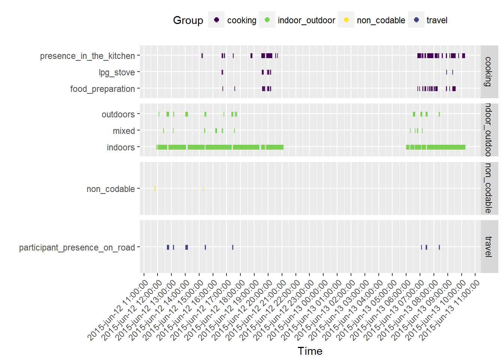
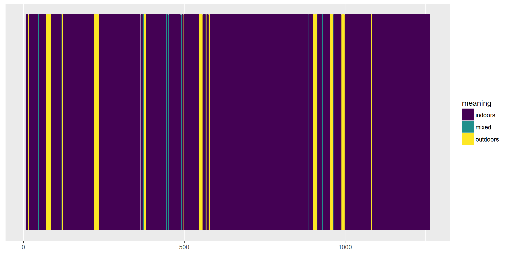
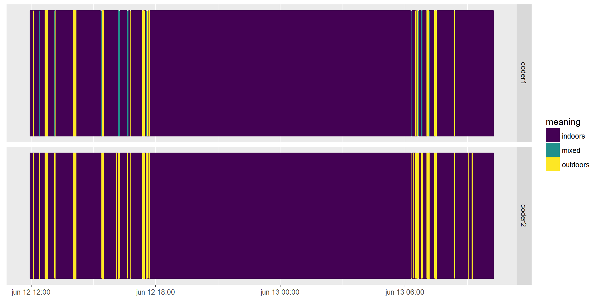

Data conversion, summarizing and plotting
M. Salmon and other CHAI project members
2017-02-15
Introduction
This package aims at supporting the analysis of annotation results of wearable camera images. The workflow is as follows:
participants of a study wear a camera that automatically produces pictures;
these pictures are then annotated by coders using a list of annotations;
the results of these annotations are then used to e.g. reconstruct the sequence of activities of a person during the day, or link it to pollution exposure.
This R package supports the last step. This vignette covers the questions “How to convert raw files? How to summarize the data? How to plot the data?”. There’s another vignette dedicated to interrater agreement.
Data structure
The structure of data in the package is adapted to data produced using the Doherty Sensecam Browser for annotation or with data produced using the XnView MP software. However, you can probably re-format your raw data to use the converting function.
The data needed for using the package are:
- A table of possible annotations, called
dico. It contains three columns Code, Meaning, Group. The Code is the unique X-digit identifier of an activity. The Meaning, preferably in a single word such as washingYourTeeth, explains the code. The Group allows to group activities into meaningful categories, i.e. washingYourTeeth and washingYourHands could be in the hygiene Group whereas eatingRealFood and snackingOnCheapChocolate could be in the eating Group. If you do not use abbreviations, Code and Meaning can be equal but in any case they both need to be present.
path_dico <- system.file("extdata", "dicoCoding_pinocchio.csv", package = "watchme")
sep_dico <- ";"
dico <- read.table(path_dico, sep = sep_dico, header=TRUE)
dico## Code Meaning Group
## 1 01A BiomassCookingUnit 1
## 2 01B LPGStove 1
## 3 01C OtherCookingUnit 1
## 4 02B PresenceKitchen 1
## 5 02A FoodPreparation 1
## 6 03A Eating 1
## 7 01. Cooking 99-
A table of coding results. The columns are either:
name,image_path,image_time,annotation (SQL query of the Doherty browser database, in this case the column name is a repetition of the participant name)
Filename, EXIF:Date Taken [Y-m-d_H-M-S], IPTC:Keywords (XnView MP)
The column image_path/Filename indicates the path to the picture, or its name. It only needs to be unique for each picture. The column image_time/EXIF:Date Taken [Y-m-d_H-M-S] gives the date and time at which the picture was taken, in the format “YMD HMS”. The column annotation/IPTC:Keywords gives the code(s) associated with the picture. They can be pasted one after another, since we will use grepl() for finding the unique X-digit identifiers, or they can be on separate lines, since all codes for one picture identified by one picture_name will be merged.
These are the two formats the package were created for:
path_results <- system.file("extdata", "image_level_pinocchio.csv", package = "watchme")
sep_results <- ","
coding_results <- read.table(path_results, sep = sep_results, header = TRUE)
coding_results <- dplyr::tbl_df(coding_results)
coding_results %>% head() %>% knitr::kable()| name | image_path | image_time | annotation |
|---|---|---|---|
| pinocchio | 1991-01-23 08:02:00 | ||
| pinocchio | B00000000_21I6LW_20150603_084228E.JPG | 2015-06-03 08:42:28 | |
| pinocchio | 015-06-04 08-36-32\B00000001_21I6LW_20150603_084228E.JPG | 2015-06-03 08:42:28 | |
| pinocchio | 015-06-04 08-36-32\B00000002_21I6LW_20150603_084236E.JPG | 2015-06-03 08:42:36 | |
| pinocchio | B00000003_21I6LW_20150603_084313E.JPG | 2015-06-03 08:43:13 | |
| pinocchio | B00000004_21I6LW_20150603_084349E.JPG | 2015-06-03 08:43:49 |
path_results <- system.file("extdata", "sample_coding1.csv", package = "watchme")
sep_results <- "\t"
coding_results <- read.table(path_results, sep = sep_results, header = TRUE,
quote = "\'")
coding_results <- dplyr::tbl_df(coding_results)
coding_results %>% head() %>% knitr::kable()| X.Filename.With.Ext | EXIF.Date.Taken..Y.m.d_H.M.S. | IPTC.Keywords | X…. |
|---|---|---|---|
| “B00000000_21I6LW_20150612_115011E.JPG | 2015-06-12_11-49-56 | Non codable | “,,, |
| “B00000001_21I6LW_20150612_115012E.JPG | 2015-06-12_11-49-59 | Non codable | “,,, |
| “B00000002_21I6LW_20150612_115013E.JPG | 2015-06-12_11-50-01 | Non codable | “,,, |
| “B00000003_21I6LW_20150612_115014E.JPG | 2015-06-12_11-50-04 | Non codable | “,,, |
| “B00000004_21I6LW_20150612_115014E.JPG | 2015-06-12_11-50-06 | Non codable | “,,, |
| “B00000005_21I6LW_20150612_115015E.JPG | 2015-06-12_11-50-09 | Non codable | “,,, |
From input data to tibble data.frames
Conversion from one coding file to one data.frame
Using both these inputs, we create a tibble on which operations will be performed.
The tibble has the following variables:
participant_id, Name or ID number of the participant (character)
image_path, Path or name of the image in order to be able to identify duplicates (character)
image_time, Time and date of each image (POSIXt)
Columns of Booleans, indicating if a given code was given to a given picture.
the attributedico, which is atibble.
The function used to create such a tibble is called watchme_prepare_data.
For finding both inputs and interpreting them the watchme_prepare_data function needs to know the paths to each file, path_results and path_dico and the separator used in each of them, sep_results and sep_dico, as well as the timezone corresponding to image_time. sep_results and sep_dico might seem to be a bit of a hassle but we wanted to accomodate for different formats.
Below we illustrate the use of watchme_prepare_data.
library("watchme")
path_results <- system.file("extdata", "sample_coding1.csv", package = "watchme")
sep_results <- "\t"
path_dico <- system.file("extdata", "dico_coding_2016_01.csv", package = "watchme")
sep_dico <- ";"
results_table <- watchme_prepare_data(path_results=path_results, sep_results=sep_results,
path_dico=path_dico, sep_dico=sep_dico, tz = "Asia/Kolkata")
results_table %>% head() %>% knitr::kable()| image_path | image_time | participant_id | biomass_cooking_unit | lpg_stove | other_cooking_unit | food_preparation | eating_ | presence_in_the_kitchen | travel_by_bus | travel_by_bicycle | travel_by_auto | travel_by_motorcycle | participant_presence_on_road | presence_at_office_or_shop | presence_at_work_field | presence_in_industry | presence_in_informal_work | diesel_generator | smoking | visible_flame_or_smoke | indoors | outdoors | in_vehicle | mixed | non_codable |
|---|---|---|---|---|---|---|---|---|---|---|---|---|---|---|---|---|---|---|---|---|---|---|---|---|---|
| “B00000000_21I6LW_20150612_115011E.JPG | 2015-06-12 11:49:56 | no_id | FALSE | FALSE | FALSE | FALSE | FALSE | FALSE | FALSE | FALSE | FALSE | FALSE | FALSE | FALSE | FALSE | FALSE | FALSE | FALSE | FALSE | FALSE | FALSE | FALSE | FALSE | FALSE | TRUE |
| “B00000001_21I6LW_20150612_115012E.JPG | 2015-06-12 11:49:59 | no_id | FALSE | FALSE | FALSE | FALSE | FALSE | FALSE | FALSE | FALSE | FALSE | FALSE | FALSE | FALSE | FALSE | FALSE | FALSE | FALSE | FALSE | FALSE | FALSE | FALSE | FALSE | FALSE | TRUE |
| “B00000002_21I6LW_20150612_115013E.JPG | 2015-06-12 11:50:01 | no_id | FALSE | FALSE | FALSE | FALSE | FALSE | FALSE | FALSE | FALSE | FALSE | FALSE | FALSE | FALSE | FALSE | FALSE | FALSE | FALSE | FALSE | FALSE | FALSE | FALSE | FALSE | FALSE | TRUE |
| “B00000003_21I6LW_20150612_115014E.JPG | 2015-06-12 11:50:04 | no_id | FALSE | FALSE | FALSE | FALSE | FALSE | FALSE | FALSE | FALSE | FALSE | FALSE | FALSE | FALSE | FALSE | FALSE | FALSE | FALSE | FALSE | FALSE | FALSE | FALSE | FALSE | FALSE | TRUE |
| “B00000004_21I6LW_20150612_115014E.JPG | 2015-06-12 11:50:06 | no_id | FALSE | FALSE | FALSE | FALSE | FALSE | FALSE | FALSE | FALSE | FALSE | FALSE | FALSE | FALSE | FALSE | FALSE | FALSE | FALSE | FALSE | FALSE | FALSE | FALSE | FALSE | FALSE | TRUE |
| “B00000005_21I6LW_20150612_115015E.JPG | 2015-06-12 11:50:09 | no_id | FALSE | FALSE | FALSE | FALSE | FALSE | FALSE | FALSE | FALSE | FALSE | FALSE | FALSE | FALSE | FALSE | FALSE | FALSE | FALSE | FALSE | FALSE | FALSE | FALSE | FALSE | FALSE | TRUE |
In the case of the CHAI project, we had many coding results files from XnView MP and some of them had annotations spread over several columns. Because of this we added the robust_reading option which is FALSE by default. When TRUE each results file is read twice, once for finding image_path and image_time (which need to be the first and second column, respectively), once for finding annotation by considering each line as a single variable. This way we didn’t need to care too much about the number of columns of annotations, even if in theory it should have been one column only.
Conversion from several coding files to one data.frame
In the CHAI project, annotation of pictures was performed in several passes: in a first pass, coders looked at the set of pictures and assigned indoor/outdoor location for instance, in a second one they assigned code from the cooking group, etc. Each pass led to one file. So all results from one participant-day were contained in 5 coding files. Because of this, we wrote a function for being able to combine them. The steps were the following:
For each pass, generate a coding tibble with a dico as attribute via the use of
watchme_prepare_data(). For this we used one dico per pass where only the codes of that group (e.g. only cooking codes) were described.Use the
watchme_combine_resultsfunction on the list of these 5 tibbles.common_codesin this case was only the “uncodable” picture code, all other columns had to present in only one of the tibble. For the merging to work, all 5 tibbles need to have the exact same image_time.
Here is one example.
passes <- c("CK", "IO", "OP", "PM", "TP")
create_pass_results <- function(pass){
path_results <- system.file('extdata', paste0("oneday_", pass, ".csv"),
package = 'watchme')
sep_results <- "\t"
path_dico <- system.file('extdata', paste0("dico_coding_2016_01_", pass, ".csv"),
package = 'watchme')
sep_dico <- ';'
results <- watchme_prepare_data(path_results = path_results,
sep_results = sep_results,
path_dico = path_dico,
sep_dico = sep_dico,
tz = "Asia/Kolkata")
results$image_path <- gsub('\"', "", results$image_path)
results
}
results_list <- passes %>% purrr::map(create_pass_results)
results_list[[1]]## # A tibble: 1,665 × 10
## image_path image_time participant_id
## <chr> <dttm> <chr>
## 1 B00000000_21I6LU_20150527_073822E 2015-05-27 07:38:01 no_id
## 2 B00000001_21I6LU_20150527_073823E 2015-05-27 07:38:04 no_id
## 3 B00000002_21I6LU_20150527_073824E 2015-05-27 07:38:06 no_id
## 4 B00000003_21I6LU_20150527_073825E 2015-05-27 07:38:09 no_id
## 5 B00000004_21I6LU_20150527_073826E 2015-05-27 07:38:12 no_id
## 6 B00000005_21I6LU_20150527_073826E 2015-05-27 07:38:14 no_id
## 7 B00000006_21I6LU_20150527_073826E 2015-05-27 07:38:17 no_id
## 8 B00000007_21I6LU_20150527_073827E 2015-05-27 07:38:19 no_id
## 9 B00000008_21I6LU_20150527_073828E 2015-05-27 07:38:22 no_id
## 10 B00000009_21I6LU_20150527_080738E 2015-05-27 08:07:37 no_id
## # ... with 1,655 more rows, and 7 more variables:
## # biomass_cooking_unit <lgl>, lpg_stove <lgl>, other_cooking_unit <lgl>,
## # food_preparation <lgl>, eating <lgl>, presence_in_the_kitchen <lgl>,
## # non_codable <lgl>oneday_results <- watchme_combine_results(results_list,
common_codes = "non_codable")
oneday_results## # A tibble: 1,665 × 26
## image_path image_time participant_id
## <chr> <dttm> <chr>
## 1 B00000000_21I6LU_20150527_073822E 2015-05-27 07:38:01 no_id
## 2 B00000001_21I6LU_20150527_073823E 2015-05-27 07:38:04 no_id
## 3 B00000002_21I6LU_20150527_073824E 2015-05-27 07:38:06 no_id
## 4 B00000003_21I6LU_20150527_073825E 2015-05-27 07:38:09 no_id
## 5 B00000004_21I6LU_20150527_073826E 2015-05-27 07:38:12 no_id
## 6 B00000005_21I6LU_20150527_073826E 2015-05-27 07:38:14 no_id
## 7 B00000006_21I6LU_20150527_073826E 2015-05-27 07:38:17 no_id
## 8 B00000007_21I6LU_20150527_073827E 2015-05-27 07:38:19 no_id
## 9 B00000008_21I6LU_20150527_073828E 2015-05-27 07:38:22 no_id
## 10 B00000009_21I6LU_20150527_080738E 2015-05-27 08:07:37 no_id
## # ... with 1,655 more rows, and 23 more variables:
## # biomass_cooking_unit <lgl>, lpg_stove <lgl>, other_cooking_unit <lgl>,
## # food_preparation <lgl>, eating <lgl>, presence_in_the_kitchen <lgl>,
## # indoors <lgl>, outdoors <lgl>, in_vehicle <lgl>, mixed <lgl>,
## # presence_at_office_or_shop <lgl>, presence_at_work_field <lgl>,
## # presence_in_industry <lgl>, presence_in_informal_work <lgl>,
## # diesel_generator <lgl>, smoking <lgl>, visible_flame_or_smoke <lgl>,
## # travel_by_bus <lgl>, travel_by_bicycle <lgl>, travel_by_auto <lgl>,
## # travel_by_motorcycle <lgl>, participant_presence_on_road <lgl>,
## # non_codable <lgl>Plotting
There is a default function based on ggplot2
watchme_plot_raw(results_table)## Warning: Removed 1606 rows containing missing values (geom_point).
From the coding results to table of events
Conversion
Using the annotations from the images, when can easily deduce a sequence of events. For instance having two subsequent pictures of washingYourTeeth taken at respectively t1 and t2 could be interpreted as having a washingYourTeeth event from t1 to t2. The watchme_aggregate allows the conversion from a wearableCamImages object to a table (dplyr class tbl_df) with
event_code, group, meaning
start_time (
POSIXt),end_time (
POSIXt),start_picture and end_picture,
no_pictures in the event,
duration in seconds.
If pictures have several codes, then there can be synchronous events.
The function watchme_aggregate takes two arguments: a tibble created by watchme_prepare_data and a minimal duration for the events, in pictures, which is called min_no_pictures. Below are two examples.
data("coding_example")
eventTable <- watchme_aggregate(df = coding_example)
knitr::kable(head(eventTable))| event_code | start_time | end_time | no_pictures | start_picture | end_picture | group | meaning | duration |
|---|---|---|---|---|---|---|---|---|
| 01. | 2015-06-03 08:45:09 | 2015-06-03 08:45:09 | 1 | 7 | 7 | 99 | cooking | 0 |
| 01. | 2015-06-03 09:13:34 | 2015-06-03 09:13:34 | 1 | 50 | 50 | 99 | cooking | 0 |
| 01. | 2015-06-03 09:15:24 | 2015-06-03 09:15:24 | 1 | 53 | 53 | 99 | cooking | 0 |
| 01. | 2015-06-03 09:16:46 | 2015-06-03 09:22:23 | 8 | 55 | 62 | 99 | cooking | 337 |
| 01. | 2015-06-03 09:37:20 | 2015-06-03 09:37:53 | 2 | 81 | 82 | 99 | cooking | 33 |
| 01. | 2015-06-03 10:48:40 | 2015-06-03 10:48:40 | 1 | 180 | 180 | 99 | cooking | 0 |
eventTable2 <- watchme_aggregate(df = coding_example, min_no_pictures = 2)
knitr::kable(head(eventTable2))| event_code | start_time | end_time | no_pictures | start_picture | end_picture | group | meaning | duration |
|---|---|---|---|---|---|---|---|---|
| 01. | 2015-06-03 09:16:46 | 2015-06-03 09:22:23 | 8 | 55 | 62 | 99 | cooking | 337 |
| 01. | 2015-06-03 09:37:20 | 2015-06-03 09:37:53 | 2 | 81 | 82 | 99 | cooking | 33 |
| 01. | 2015-06-03 13:21:36 | 2015-06-03 13:22:43 | 3 | 309 | 311 | 99 | cooking | 67 |
| 01. | 2015-06-03 15:06:04 | 2015-06-03 15:06:47 | 2 | 449 | 450 | 99 | cooking | 43 |
| 01. | 2015-06-04 06:13:30 | 2015-06-04 06:16:37 | 5 | 801 | 805 | 99 | cooking | 187 |
| 01. | 2015-06-04 06:21:13 | 2015-06-04 06:35:26 | 19 | 811 | 829 | 99 | cooking | 853 |
Plotting a table of events
The package provides a function using the R ggplot2 package for plotting sequences of events.
Below are three examples. In the example we give there’s only one group of codes, indoor_outdoor, where codes are incompatible, but if plotting several groups of codes, one can use facetting.
data("coding1")
event_table <- watchme_aggregate(df = coding1)
watchme_plot_sequence(event_table)
watchme_plot_sequence(event_table, x_axis = "picture")
watchme_plot_sequence(event_table, x_axis = "picture") +
facet_grid(group ~ .)
For plotting results from more than one coder, one could do this:
data("coding1")
data("coding2")
dico <- attr(coding1, "dico")
event_table1 <- watchme_aggregate(df = coding1)
event_table1 <- mutate(event_table1, coder = "coder1")
event_table2 <- watchme_aggregate(df = coding2)
event_table2 <- mutate(event_table2, coder = "coder2")
event_table <- dplyr::bind_rows(event_table1, event_table2)
attr(event_table, "dico") <- dico
watchme_plot_sequence(event_table) +
facet_grid(coder ~ .)